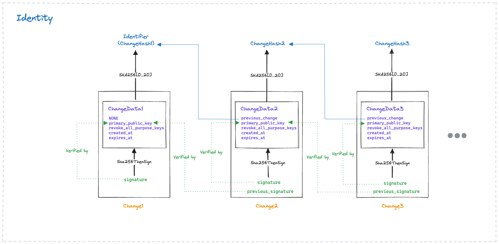

Mrinal Wadhwa · February 8, 2026
Agent Identities
everything you need to know
For over two decades, my work has kept circling back to one hard problem:
how do machines prove they can be trusted?
Agents have raised the stakes: they take autonomous actions. Without cryptographic identity, we
can’t authenticate requests, authorize actions, or attribute decisions.
By the late 2000s, WebPKI and TLS were finally maturing, and communication on the Internet was
becoming trustworthy. In 2008, I implemented TLS 1.2 in ActionScript. It was my first deep dive into
security protocols.
Over the next few years, I kept hand-rolling authentication into every application, until OAuth 2.0
and OpenID Connect made it possible to offload auth to Okta or Auth0.
Then in 2014, I started designing a system of thousands of sensors and controllers embedded in city
infrastructure and ports worldwide. It ran critical city operations, so security and trust were
foundational. But the established web-app-centric primitives didn’t fit this world of
constrained devices
operating autonomously over unsafe networks.
Trust in the entire WebPKI was too broad and unsafe when a device only ever talked to one or two
services. Guarantees of TLS broke when data traversed multiple transport layer hops. There was no
human or screen available for OAuth flows. API tokens were a bad option: 10k devices meant 10k
shared secrets to provision, rotate, revoke, and never leak.
None of these primitives fit, but many connected products shoe-horned them in anyway, often in
predictably unsafe ways.
The internet paid the price: a series of botnet attacks that weaponized millions of
insecure devices
and
knocked much of the internet offline.
By 2018, a handful of driverless test vehicles were on the streets of San Francisco, and I could see
where this was heading: the same trust challenges I'd faced with small autonomous devices, but in
much larger autonomous systems that didn't fully exist yet.
So I built
Ockam: an
open-source Rust library and protocols to create cryptographic identities, establish mutual trust,
and encrypt communication end-to-end across distributed systems.
As Ockam grew, we worked with major platform providers. What I saw surprised me: even large
organizations still relied on IP allow-lists and other weak primitives to “secure”
communication across services, clouds, and companies.
In late 2024, the form those autonomous systems would take became clear:
collaborating swarms of agents driven by large language models.
In the year since, as I built
Autonomy on top of Ockam, the
wider industry is starting to see the gaps and invest in agent identity.
Do agents need their own identities?
You could argue that agents are just another type of application and don’t need new identity
infrastructure.
But agents don’t behave like traditional software. Three things break.
Attribution. Traditional software follows pre-programmed steps. Agents autonomously
decompose and pick their own. “Resolve this complaint” becomes: access order history,
check inventory, issue a refund, update shipping. The rep never authorized those specific actions,
but with only her identity on record, she takes the blame when something goes wrong.
Distinct capabilities. Agents often need permissions the invoking user
doesn’t have. A support agent needs refund authority. The rep who invokes it does not. She
shouldn’t. And some agents don’t act for any specific user at all. An onboarding agent
acts on behalf of a company, not the HR manager who configured it.
Delegation. Agents delegate to sub-agents. Every sub-agent needs its own identity,
or we lose track of who has access to what, who did what, and what they acted on. Existing IAM,
designed for humans, can’t keep up: thousands of agents spawned in seconds, each needing
secrets and credentials.

A swarm of 5,000+ agents in Autonomy conducting a deep code review.
More on that in
Agent Swarms.
Without their own identities, agents can’t authenticate requests, authorize actions, or
attribute decisions.
A swarm of collaborating agents needs infrastructure for all of this: provision identities, manage
secrets, issue credentials, open secure channels, and build mutual trust.
The rest of this article walks through what this infrastructure looks like, layer by layer.
Who is this agent?
To trust an agent, we need to authenticate who it is, authorize what it does, and attribute what it
decides. For all three, the agent must hold a private key and produce cryptographic proof.
Authentication. An agent calls a payments API. HTTPS verifies the API’s
domain and encrypts the connection. But the agent authenticates by sending an API token in a request
header. That token identifies an account, not an agent. That token is almost always shared across
every agent, set once as an environment variable. If it leaks, the attacker looks exactly like a
legitimate agent.
OAuth access tokens are no better. The token says the authorization server approved these scopes at
some point. OpenID Connect adds a subject identifier, but the proof comes from the identity
provider, not the agent. The agent presents someone else’s assertion, not its own.
Attribution. A month later, an audit asks: which agent accessed this
customer’s financial records, acting on whose behalf, for what reason? The log says API token
sk-proj-abc123 performed a read on record #4471. That token is shared across 30 agents.
Which one? The log cannot say. And even if it could, the log entry is text in a database. It can be
edited. It can be fabricated. Nothing cryptographically binds the action to the actor. No signature.
No proof.
Proof. But a cryptographic key pair solves both problems. The agent holds a private
key it never reveals. It proves identity by signing a challenge. It proves actions by signing each
one. Anyone with the public key can verify the signature. It cannot be forged or repudiated.
Identifiers. Each agent needs its own identifier. A good one starts with a key
pair: a private key and a corresponding public key. The identifier is tied to the public key. Only
the holder of the private key can sign as this identity; anyone with the public key can verify the
signature. Ockam Identifiers, X.509 certificates, and DIDs all work like this.
Provisioning. Think of how Let’s Encrypt automates certificate provisioning
for web domains. Agents need something similar to provision identities, but at a different scale:
thousands of agents, created in seconds, with no operator in the loop. In Autonomy, every agent
creates its own cryptographic identity in milliseconds.
Rotation. Keys get compromised. Keys expire. If rotating a key changes the
identifier, every credential, audit trail, and trust relationship built on it breaks. WebPKI handles
this by binding keys to a stable domain name. Workload identity frameworks solve this with an
identifier assigned by the infrastructure. In Ockam, the identifier is a hash of the first change in
a cryptographic change history. Rotating a key appends a new signed change, and the identifier stays
the same.

One approach: Ockam’s change history. The identifier is the hash of the first change.
Rotating keys appends a new signed change.
Location. WebPKI ties identity to a public domain name. Workload identity
frameworks tie it to an environment, like a Kubernetes cluster. Agents aren’t servers with
domain names. They operate across clusters, clouds, and devices.
The identifier is the anchor. Everything else hangs off it: credentials reference it, secure
channels verify it, access policies evaluate it, audit logs record it.
Where do the secrets live?
An agent needs two kinds of secrets.
Cryptographic private keys: its identity keys,
signing keys, ssh keys. And
bearer credentials: API tokens, database
passwords, OAuth access tokens.
Traditional software follows a fixed code path. Exfiltrating a secret requires exploiting a
vulnerability. Agents are different. They take instructions from external inputs and are prone to
injection. If an agent can read a secret, an attacker can talk it into revealing that secret.
In practice, teams store bearer tokens in environment variables or files. A Stripe token, an OpenAI
token, a database password, all readable by every agent. If any agent is compromised, every
credential is exposed. There is a second problem. When many agents call the same API, they all share
one token. No way to audit which agent made which call.
If each agent has its own cryptographic identity, secrets don’t have to be shared. The agent
proves its identity and a broker exchanges that proof for a
short-lived, scoped token. If the agent is
compromised, the attacker gets a token that expires in minutes. The long-lived secret never left the
broker. The billing agent gets its own Stripe token. The support agent gets a different one, scoped
to refunds. Autonomy supports this with
leased secrets: short-lived credentials bound to
a specific agent’s identity, issued on demand, revoked when the identity is revoked.
Identity keys are secrets too. If the agent can read its own private key, it can be manipulated into
revealing it. Agent identities must be bootstrapped in a way that private keys are
never readable by agents.
In Autonomy, a provisioner generates an identity’s primary signing key inside a KMS or an HSM.
The key never exists outside that strict boundary. The provisioner gives an Autonomy node access to
use the key, and an enrollment ticket. The ticket is a one-time token the node presents to receive
its initial credentials. This initial node identity then issues credentials to each agent.
Keep identity keys in hardware. Keep bearer credentials behind a broker. A compromised agent should
have nothing long-lived to reveal.
What can this agent do, and on whose behalf?
An authenticated identity tells us who. An authenticated credential tells us what, and on whose
behalf. There are two kinds: bearer credentials and cryptographic credentials.
Bearer Credentials are secrets like API tokens and database passwords. Agents need
them because existing systems run on them. The agent should never see the raw secret. We need
infrastructure to broker short-lived tokens scoped to a specific agent and its needs.
Cryptographic Credentials are signed statements: an authority attests that a
specific identity has certain attributes. Each credential is bound to a subject’s
cryptographic identifier and carries attributes as key-value pairs: role, scope, delegation context,
expiration. The signature proves authenticity without calling the issuer. Unlike bearer credentials,
cryptographic credentials are not secrets.
Ockam credentials and W3C Verifiable Credentials work this way.
Delegation. An agent’s identity tells us that it is requesting an action. A
cryptographic credential tells us whether it is authorized to do it, and by whom. Not just
this agent should have access to order history but
this agent should have access because a specific customer delegated that authority to resolve
this complaint. In Autonomy, every identity can issue credentials. That’s what enables delegation. When an
agent delegates to another agent, the credential captures who delegated to whom, for what purpose,
and for how long. Each delegation can only reduce authority, never amplify it.
Credential attributes are defined at authorization time, but agent behavior evolves at execution
time. A user says onboard this new employee. The agent interprets that as: create accounts,
assign permissions, schedule training, order equipment. The attributes granted said
employee onboarding. The agent has gone well beyond that. Fine-grained attributes can
constrain what an agent does, but someone (human or agent) must anticipate and enumerate every
action ahead of time. The more autonomous the agent, the harder that becomes.
An agent can now prove who it is, protect its secrets, and present credentials for what it can do.
We have not yet addressed how agents communicate safely, how to constrain what they do and what data
they see, or how to trace who did what and why.
Secure channels. A TLS certificate authenticates a domain; a bearer token
authenticates an account. Agents run behind private cloud networks, across company boundaries, on
personal laptops, rarely with a public domain name or a publicly reachable endpoint. Communication
between agents needs to traverse these network boundaries, mutually authenticate the actual agents,
end-to-end encrypt through intermediaries, and provide forward secrecy.
Access control. A credential asserts an agent’s attributes. Access control
evaluates those attributes at each boundary: should this agent perform this action, access this
data, right now? Making role-based access control granular enough for agents leads to role
explosion: the roles multiply as
agent type × user × task × data scope.
Agents need infrastructure to evaluate attribute-based policies on every request. Policies are
defined and managed centrally. The default policy: deny all.
Observability and accountability. Agents need decision traces that capture not just
what they did but why: what context the agent saw, what policies applied, under whose authority it
acted. Cryptographic identity makes every action attributable to a specific agent. Over time, past
decisions and exceptions become context that improves an agent’s future decisions.
The stack is load-bearing. Identity makes credentials possible; credentials make secure channels
meaningful; secure channels make access control enforceable. A weakness in any layer compromises the
ones above it.
I’ll dig deeper into each of these layers in a future update.
Discuss on Hacker News